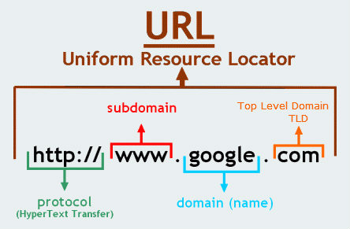

DNS: Domain Name System, a global naming system that translates numerical IP addresses to domain names. We need domain names as memorizing the IP address would be tricky. When domain name is entered in the address bar it converts into IP address and that is being sent to the server. As server goes by IP addresses. When a domain name is registered a unique IP address is mapped to it and that IP address becomes identity of the domain name.
ICANN: ICANN stands for Internet Corporation for Assigned Names and Numbers. Acts as central repository for IP addresses this helps prevent domain name repetition along with proper TLD. TLDs stand for Top-Level Domain, includes .com, .org, country codes such as .uk and mx and other suffixes. ICANN approves both on domain names and TLD. Once ICANN approves the site gets registered and ready to use.

Image Source: https://www.quora.com/What-is-a-TLD
Domain names and ICANN play a key role in website URL. Domain name eases users task and by saving their time into memorizing IP addresses. Website URL consists of sub-domain name followed by Domain Name an lastly mapped with TLDs that is .com,.edu,.gov,etc..Many businesses are being flourished online every second. This requires website and a website is identified with its domain name. In-order for that domain name to be approved it first needs to be registered via ICANN. Supposedly the domain name gets approved then the site can be ready to be viewed by public. There are certain TLDs which are widely available and largely in use if a user introduces new TLD it might take time to approve and cannot be guaranteed that the TLD might get approved. The waiting period on new TLDs approval might be longer. ICANN and Domain names come together hand in hand.
Image Source: https://churchm.ag/how-the-internet-works/